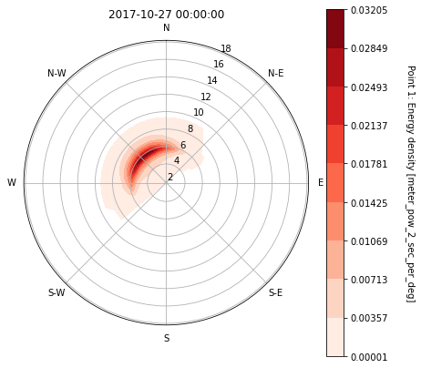
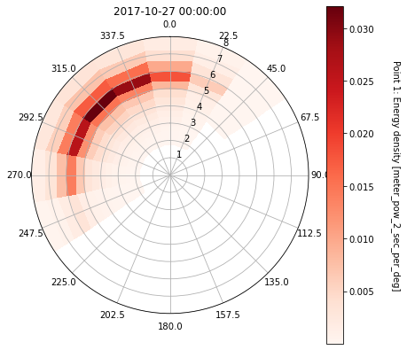
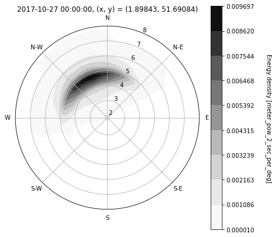
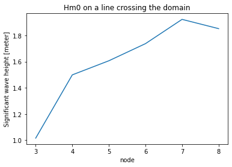
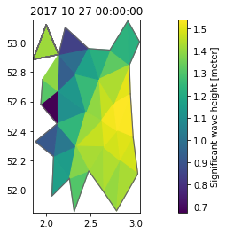
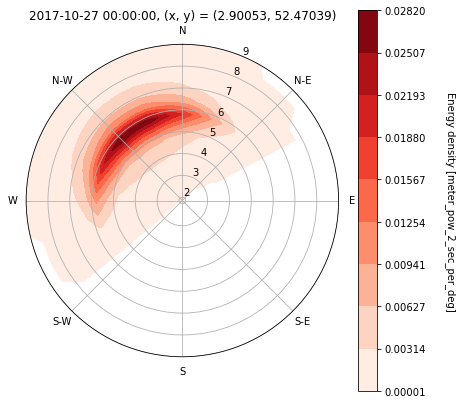

import numpy as np
import matplotlib.pyplot as plt
import mikeioDfsu - spectral data
MIKE 21 SW can output full spectral information in points, along lines or in an area. In all these cases data are stored in dfsu files with additional axes: frequency and directions.
This notebook explores reading full spectral dfsu files from MIKE 21 SW as
- point
- line
- area
Read dfsu point spectrum
fn = "../tests/testdata/pt_spectra.dfsu"
da = mikeio.read(fn)[0]
da<mikeio.DataArray>
name: Point 1: Energy density
dims: (time:31, direction:16, frequency:25)
time: 2017-10-27 00:00:00 - 2017-10-27 05:00:00 (31 records)
geometry: Point Spectrum Geometry(frequency:25, direction:16)da.plot(); # plots first timestep by default
Don’t like the default plot? No worries, it can be customized.
ax = da.plot.patch(rmax=8);
dird = np.round(da.directions, 2)
ax.set_thetagrids(dird, labels=dird);
Dfsu line spectrum
Data in dfsu line spectra is node-based contrary to must other dfsu-formats.
fn = "../tests/testdata/line_spectra.dfsu"
da = mikeio.read(fn).Energy_density
da<mikeio.DataArray>
name: Energy density
dims: (time:4, node:10, direction:16, frequency:25)
time: 2017-10-27 00:00:00 - 2017-10-27 05:00:00 (4 records)
geometry: DfsuSpectral1D (9 elements, 10 nodes)spec = da[0].isel(node=3) # note first 3 points are outside domain
spec<mikeio.DataArray>
name: Energy density
dims: (direction:16, frequency:25)
time: 2017-10-27 00:00:00 (time-invariant)
geometry: Point Spectrum Geometry(frequency:25, direction:16, x:1.89843, y:51.69084)spec.plot(cmap="Greys", rmax=8, r_as_periods=True);
Plot Hm0 on a line
Hm0 = da.isel(time=0).to_Hm0()
Hm0.plot(title='Hm0 on a line crossing the domain');
Dfsu area spectrum
fn = "../tests/testdata/area_spectra.dfsu"
da = mikeio.read(fn, items="Energy density")[0]
da<mikeio.DataArray>
name: Energy density
dims: (time:3, element:40, direction:16, frequency:25)
time: 2017-10-27 00:00:00 - 2017-10-27 05:00:00 (3 records)
geometry: DfsuSpectral2D (40 elements, 33 nodes)da.plot(); # default area plot is Hm0
da_pt = da.sel(x=2.9, y=52.5)
da_pt<mikeio.DataArray>
name: Energy density
dims: (time:3, direction:16, frequency:25)
time: 2017-10-27 00:00:00 - 2017-10-27 05:00:00 (3 records)
geometry: Point Spectrum Geometry(frequency:25, direction:16, x:2.90053, y:52.47039)da_pt.plot(rmax=9);
Interactive widget for exploring spectra in different points
from ipywidgets import interact
from datetime import timedelta@interact
def plot_element(id=(0,da.geometry.n_elements-1), step=(0,da.n_timesteps-1)):
spec = da[step,id]
time = da.start_time + timedelta(seconds=(step*da.timestep))
spec.plot(vmax=0.04, vmin=0, rmax=8, title=f"Wave spectrum, {time}, element: {id}");
plt.show();